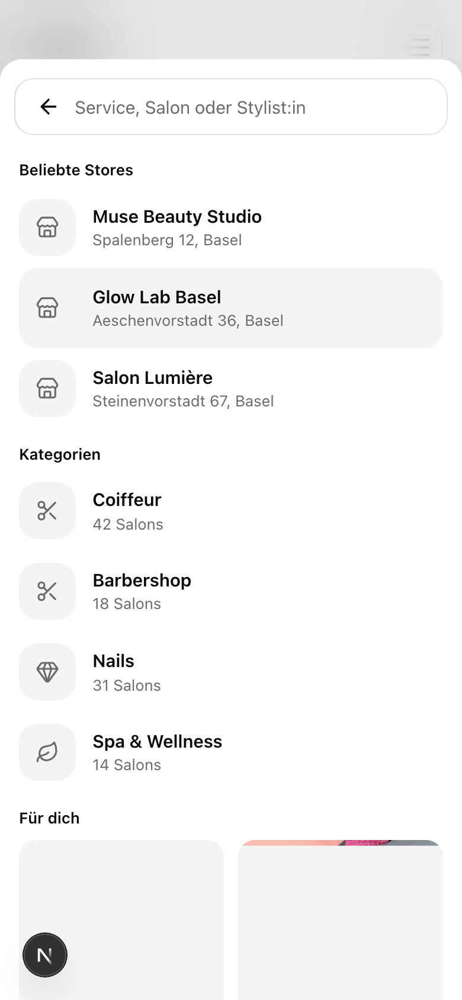

The real search overlay, integrated probesP13 tap the inputP15 tap a resultall pages

P13
bar
Salons
Barbershop Central
Klybeckstrasse 12, Basel
Old Town Barbers
Steinenvorstadt 67, Basel
Services
Barber cut
from CHF 25
Checking availability
Barbershop Central, this week
2 free times this week. Open the salon
P13: grouped sections, matched letters highlighted, an honest loader; row anatomy copied from the real overlay behind this patch. P15: the wait names its step. Tap the input again to reset. Slot counts are sample values.